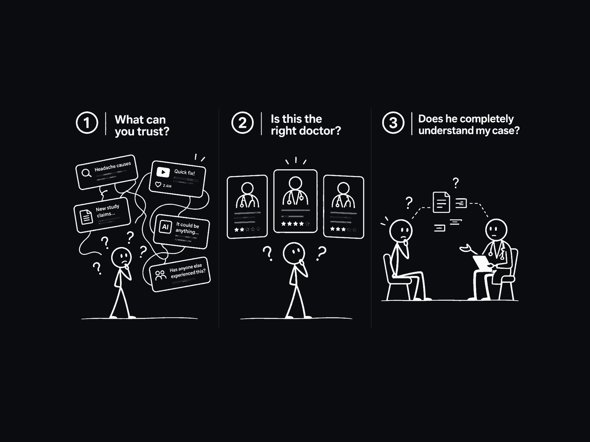
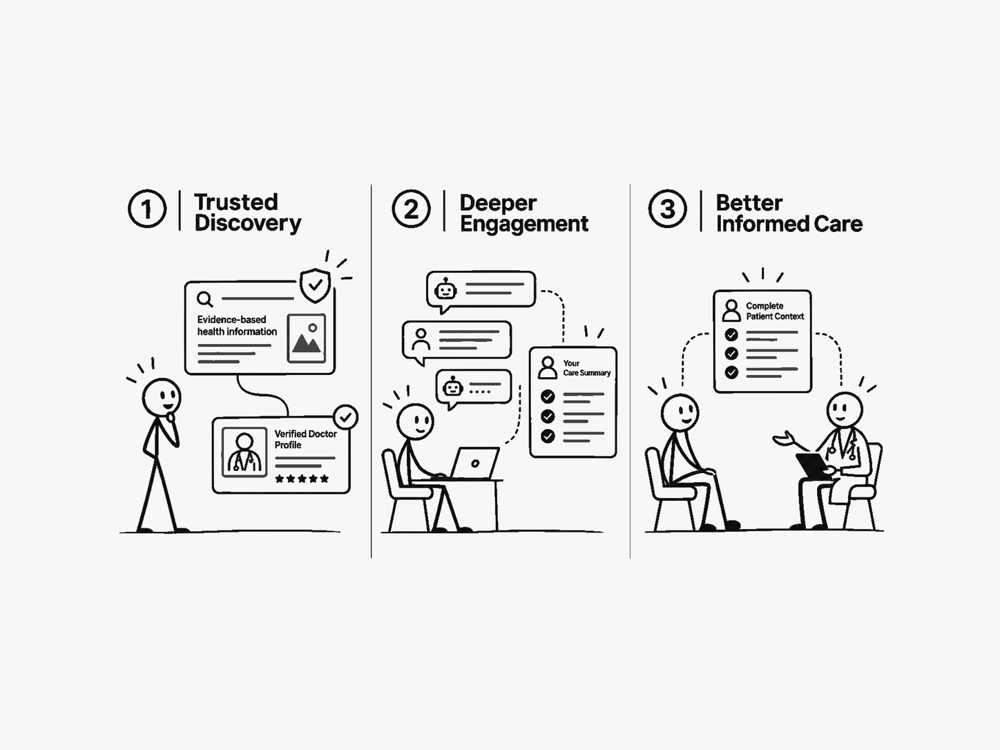

Knowing what to trust
of US adults reported difficulty deciding what to trust when health information conflicts.
Health advice is easy to find. Knowing what to trust is not. Patients need a trusted path from information to care.
Trusted Discovery. Deeper Engagement. Better Informed Care.


Drag to compare, or choose a full view.
Drag the handle to compare before and after DigiDr.
BeforeConflicting advice. Uncertainty about the doctor. An incomplete patient story.
AfterTrusted discovery. Deeper engagement. Better informed care.
Patients cannot reliably find trusted health information or the right doctor when it matters most.
of US adults reported difficulty deciding what to trust when health information conflicts.
of assessed claims in 309 selected health professional videos had very low or no supporting evidence.
of surveyed Canadian physicians had intervened after patients followed misleading online health advice.
Independent research. Each population and sample is shown. These findings describe the problem and do not measure DigiDr outcomes. View methods and limitations ↗
The internet scaled health information.
It did not create a trusted path to the right care.
DigiDr connects discovery, patient understanding and preparation for the doctor. The relationship carries forward.
More cities. More specialties. More people discovering a doctor’s expertise.
Platform figures confirmed by DigiDr.
Product 01 · ContentAssist
Start with the questions patients are asking. Connect local relevance, deep Doctor Context and evidence with information the doctor can approve and share.
Patient questions, local needs and the information people are searching for.
Expertise, services, location, language and the doctor’s own voice.
Assess medical claims and create a clear explanation with its qualifications intact.
The doctor reviews the exact medical meaning before anything is released.
Share approved information through the microsite and relevant communication channels.
Make trustworthy information discoverable.
Make the responsible doctor visible.
Product 02 · PatientAssist
A virtual assistant that asks progressively useful questions, offers guidance approved by the doctor and keeps the patient’s concerns connected before and after the visit.
Begin with what the patient is trying to accomplish, before asking for more detail.
Choose the next question when its answer improves understanding or the next step.
Bring relevant articles and preparation guidance approved by the doctor into the conversation.
Keep progress updates and follow up questions connected, so the patient can build on what is known.
Keep the doctor and patient
relationship continuous.
Product 03 · DoctorAssist
Bring Doctor Context, Patient Context and current medical evidence together. Prepare what matters, with the physician’s judgment, voice and authority intact.
Relevant inputs
Expertise, practice scope, preferences and knowledge the doctor has approved.
Reason for contact, chronology, recent changes, questions and important unknowns.
Research, guidelines, case studies, qualifications and conflicting findings.
Illustrative preparation
AI performs the preparation.
The physician makes the decision.
Useful outputs
Grounded drafts for the doctor to inspect, choose, edit or reject.
Relevant research, case studies and changes to guidance, prepared for review.
Material that fits the patient’s concern and is approved by the doctor.
More intelligence around the doctor.
Every decision remains theirs.
What people trust, how they use AI, and the questions shaping our approach.
In a five city school study, 1,129 of 2,331 students were unsure whether health information shared on social media was accurate and reliable.
US adults reported having used chatbots for at least one of eight health purposes, such as understanding symptoms, treatments, diagnoses or lab results.
US adults said they were not confident they could distinguish true from false health information supplied by AI tools or chatbots.
Each study describes a different population and method. These findings do not measure DigiDr outcomes. Inspect the evidence
What the gap between credibility and evidence means for health communication.
Read perspectiveHow purposeful questions can improve understanding without adding unnecessary burden.
Read perspectiveWhat review, approval and accountability should mean in a healthcare AI system.
Read perspectiveYour professional profile, microsite, approved content and practice tools. Built around your practice, your patients and your judgment.